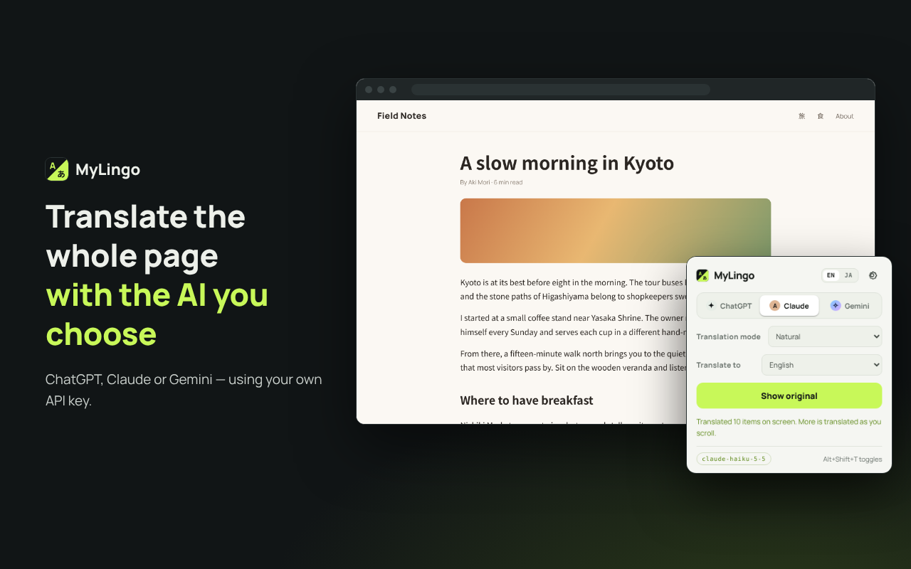

MyLingo
MyLingo
MyLingo – AI Web Page Translator
Translate the web page you are viewing — or just the text you select — into the language you want, using the AI service you choose: ChatGPT (OpenAI), Claude (Anthropic) or Gemini (Google). MyLingo comes as a Chrome extension and as a simple web app for translating text you type or paste.

- Uses your own API key. Your text goes straight from your browser to the service you choose.
- No MyLingo server, no analytics, no tracking, no ads.
- A free Gemini API key from Google AI Studio is enough to get started.
Chrome extension
Translates the page you are viewing. Pages keep their layout, and you can switch back to the original in one click.
- Enter an API key for OpenAI, Anthropic or Google Gemini on the extension’s settings page.
- Click the toolbar icon and press “Translate this page”. What is on screen is translated first, and the rest as you scroll.
- Press “Show original” or Alt+Shift+T to switch back. To translate just a part, select text, right-click and choose “Translate … with MyLingo”.


Web app
A translation tool for text you type or paste. The source language is detected automatically, and the text is translated shortly after you stop typing.

- The same services, target languages and translation modes as the extension.
- A swap button exchanges the two panes and the target language, handy for writing replies.
- Light and dark mode.
- A static site with no build step: serve the repository folder (for example with
python3 -m http.server) and open it in your browser. See the README for details.
Features
- Switch between ChatGPT, Claude and Gemini, and set the model for each.
- Translate into English, Japanese, Chinese, Korean, Spanish, French, German and many more, or type any language.
- Five translation modes: Faithful, Natural, Business, Casual & social, Technical.
- API keys can be encrypted with a passkey (Touch ID, etc.) or a passphrase.
- The interface is available in English and Japanese.
Links
MyLingo is an independent project and is not affiliated with or endorsed by OpenAI, Anthropic or Google.